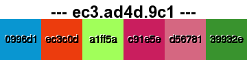

See the individual class docs for more options and specific examples.
# Load it up!
require 'git_trip'
# Grab repository information.
repo = GitTrip::Gitter::Dir.new('/path/to/repo')
# .. or ..
repo = GitTrip::Gitter::URI.new('http://domain.com/path/to/repo')
# Now that you have a repository, you can do cool shit.
repo.commits.each do |commit|
# Painter requires a commit SHA (string).
painter = GitTrip::Painter.new(commit)
# This does the work of creating a commit specific image.
painter.paint!
# +picture+ now holds a Magick::Image, so all of it's methods are supported.
painter.picture.display
# From this point, you can do something pretty with the image.
# GitTrip::PaintMode takes a Magick::Image and a mode type.
pretty = GitTrip::PaintMode.new(painter.picture, :pixel)
# Just as with GitTrip::Painter, pretty's +picture+ now holds a Magick::Image.
pretty.picture.display
end
Here's an image that was generated from the actual GitTrip repository:
Here's the SHA broken down:
0996d1ec3c0da1ff5ac91e5ed5678139932e ad4d
0996d1ec3c0da1ff5ac91e5ed5678139932e
name
By default, the image 'name' (NOT filename) contains the remaining 4 characters interpolated with some other random data pulled from the SHA. If you look at the above comparison, you'll see that the last 4 characters are 'ad4d' and are in the middle of the image header string: '--- ec3.ad4d.9c1 ---' The other characters are random splits of all repo color codes. I just wanted to have 3 characters on each side of the name, but wanted the characters to still be associated with the repository in some way.
This is only one render mode available, and only shows a sliver of the possible image combinations/effects.